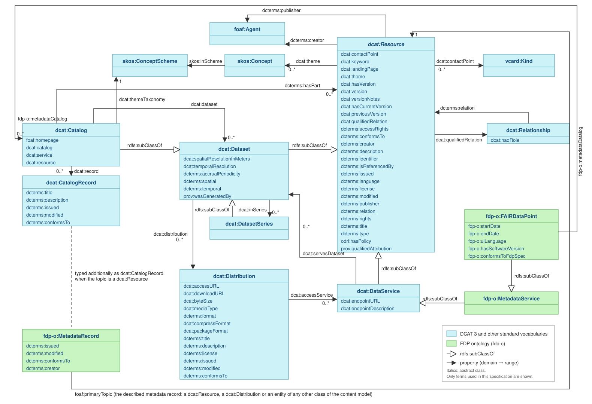

1. Introduction {#introduction}
This section is non-normative.
The FAIR Data Point (FDP) is a metadata service that provides access to metadata following the FAIR principles [FAIR-principles] [FDP]. An FDP, on one side, allows the owners and publishers of digital objects to expose the metadata of these objects in a FAIR manner and, on the other side, allows consumers of digital objects to discover information (metadata) about the offered objects. Commonly, an FDP is used to expose metadata of datasets, but metadata of other types of entities can also be exposed, such as ontologies, repositories, analysis algorithms, websites, and even non-digital entities such as organisations and people.
Many different repositories and their digital objects should interoperate in order to allow increasingly complex questions to be answered. These repositories and their content should be interoperable in order for client applications to autonomously interact with them and (re)use their content. However, interoperability happens at different levels, including syntactic and semantic interoperability. The FDP aims at addressing these interoperability issues by providing:
-
A common interface to access information (metadata) about (digital) entities;
-
A common representation format [RDF11-PRIMER] to express the metadata in a machine-actionable manner;
-
A common approach to inform clients how to navigate through the metadata structure of an FDP;
-
A common representation format [SHACL] to represent the schema of each metadata record.
The main goal of the FDP is to establish a common method for metadata provisioning and access and, as a consequence, to provide client applications with a predictable way of accessing and interacting with metadata content. An FDP has the following goals:
-
Allow owners, creators and publishers to expose the metadata of their digital objects in a way that follows the FAIR principles;
-
Allow consumers and users to discover information about digital objects they are interested in;
-
Provide meaningful information about digital objects for both humans and software agents.
1.1. Purpose and scope {#purpose}
The purpose of this specification is to define the expected behaviour of a FAIR Data Point, i.e., the behaviour an application must exhibit in order to be considered an FDP. The specification is implementation-agnostic: it is primarily intended as a reference for developers willing to add FDP functionality to their existing applications or to develop their own FAIR Data Point implementation. It does not prescribe how a particular FDP implementation should be internally designed or engineered. Documentation about particular implementations, such as the FDP Reference Implementation (FDP-RI), is provided by the respective implementation projects.
This version of the specification organises the behaviour of an FDP in capabilities: Read, Navigate, Write and Bundle (see § 3 Capabilities {#capabilities}). Each capability is a coherent set of behaviours that an FDP offers to third-party applications, and each has a corresponding conformance class (see § 9 Conformance {#conformance}). An application is a FAIR Data Point if it conforms to the Core conformance class, which comprises the Read and Navigate capabilities. The remaining capabilities are optional.
In order to better understand this specification, knowledge of RDF, LDP, SHACL and REST APIs is required.
1.2. Open decision points {#decision-points}
This draft deliberately leaves a number of design decisions open for review. They are marked in the text as numbered decision points (DP-n) in issue blocks, each stating the question, the options considered and, where there is one, a proposed default. The normative text surrounding a decision point is written for the proposed default, so that the document remains complete and readable; the issue block describes what would change under the other options. All decision points are collected in the Issues Index at the end of this document. Comments are welcome in the issue tracker.
1.3. Document conventions {#document-conventions}
Conformance requirements are expressed with a combination of descriptive assertions and RFC 2119 terminology. The key words "MUST", "MUST NOT", "REQUIRED", "SHALL", "SHALL NOT", "SHOULD", "SHOULD NOT", "RECOMMENDED", "MAY", and "OPTIONAL" in the normative parts of this document are to be interpreted as described in RFC 2119. [RFC2119]
All of the text of this specification is normative except sections explicitly marked as non-normative, examples, notes and issue blocks.
The SHACL shapes in this document validate the structure of a single metadata record; in SHACL, a property shape without sh:minCount allows the property to be absent and one without sh:maxCount allows any number of values.
Requirements that span several records, such as the class of the members listed in a container, or that concern HTTP behaviour, are not expressed in the shapes and are tested by inspecting the responses of the FDP.
Each requirement belongs to one capability. The capability a section belongs to is stated at the start of the section, and the conformance section (§ 9 Conformance {#conformance}) lists, per conformance class, the sections whose requirements apply.
The following namespace prefixes are used throughout this document.
| Prefix | Namespace IRI | Vocabulary |
|---|---|---|
rdf
| http://www.w3.org/1999/02/22-rdf-syntax-ns#
| RDF |
rdfs
| http://www.w3.org/2000/01/rdf-schema#
| RDF Schema |
xsd
| http://www.w3.org/2001/XMLSchema#
| XML Schema datatypes |
dcat
| http://www.w3.org/ns/dcat#
| Data Catalog Vocabulary [VOCAB-DCAT-3] |
dcterms
| http://purl.org/dc/terms/
| DCMI Metadata Terms |
foaf
| http://xmlns.com/foaf/0.1/
| Friend of a Friend |
vcard
| http://www.w3.org/2006/vcard/ns#
| vCard Ontology |
ldp
| http://www.w3.org/ns/ldp#
| Linked Data Platform [LDP] |
sh
| http://www.w3.org/ns/shacl#
| Shapes Constraint Language [SHACL] |
fdp-o
| https://w3id.org/fdp/fdp-o#
| FAIR Data Point Ontology |
2. Usage Scenarios {#usage-scenarios}
This section is non-normative.
The basis for any infrastructure is its suitability to the issues it should address. Therefore, the first step is to identify these issues. One common approach for this identification is to investigate current practices that could benefit from a supporting infrastructure. Once we analyse these practices, we can elicit the requirements for the infrastructure. In this section we list a number of data usage scenarios that represent regular practices in data-intensive domains. These usage scenarios have been gathered through interactions with a variety of representative stakeholders in different domains. These stakeholders represent data producers, data consumers and providers of both infrastructure and services for supporting data activities.
From the different semantic interoperability projects we have been and are involved in, the following usage scenarios have been identified. These usage scenarios do not represent one particular situation in a real project but depict data interoperability-related situations that we experienced in a number of different projects. From these scenarios we derived a set of requirements for a metadata storage and accessibility infrastructure, and they also guided the design and development of the solution. For each scenario we indicate the FDP capabilities (see § 3 Capabilities {#capabilities}) on which it relies.
2.1. Data discovery {#data-discovery}
A researcher needs to find datasets containing data about a given subject, e.g., proteins that are activated in specific tissues, pollution level in a given region, or infrared observation of a particular galaxy; integrate the discovered data with other pre-selected datasets and analyse them. In another situation, the researcher needs to know which biobanks carry a given type of biosample (e.g., blood samples) from patients possessing a specific disease (e.g., Alzheimer’s disease) taken from a patient registry whose onset age was lower than 45 years old. These data users need to use a straightforward search application that allows them to find the required information. However, the search application first needs to have indexed information about existing datasets wherever their location.
Capabilities involved: Read and Navigate, so that a search application can traverse and index the metadata content of an FDP; optionally Bundle, to harvest the metadata content in a single interaction.
2.2. Data access {#data-access}
Once a data user/consumer finds the desired datasets, including the information about their licenses and access protocols, the user wants to access the data, retrieving it, or sending an algorithm to analyse the data. In many situations the data user will integrate many different datasets. To carry out these integrations, the user needs to know in which formats the data can be accessed, and which access methods are available. This information comes in the form of metadata. In order to facilitate the usage of metadata, the method with which the metadata will be accessed should be common in all different metadata sources and a common representation technology should be used for the metadata.
Capabilities involved: Read.
2.3. (Meta)Data publication {#metadata-publication}
An organization is running a project in which data is being created. The data will be analysed during the project but, they may also be useful for other users. The group would therefore like to publish the data in a way that allows potential users to retrieve information about the datasets (metadata), allows data search engines to index the metadata, and allows users to access the data. Some of the produced datasets have an open license but others have more restrictive licenses. All these metadata should be available so that potential data users would have enough information to assess whether the dataset described in the metadata fits their needs.
Capabilities involved: Write, so that the group can add and maintain metadata records through the FDP; Read and Navigate, so that users and search engines can find them; optionally Bundle, for bulk publication.
2.4. Publishing other types of content {#publishing-other-types-of-content}
An organization is running a project in which different types of deliverables will be created. One group is developing a piece of software, another group is working on a controlled vocabulary, while a third group will generate a number of reference documents. The organization would like to publish information about these materials so others could discover and reuse them.
Capabilities involved: Read, Navigate and Write, together with the ability to define metadata schemas for types of content beyond datasets (see § 4.6 Extending the content model {#extending-the-content-model}).
3. Capabilities {#capabilities}
*This section is non-normative, except for § 3.1 Dependencies between capabilities {#capability-dependencies}.*
The behaviour of a FAIR Data Point is organised in capabilities. A capability is a coherent set of behaviours that an FDP offers to third-party applications. By providing a capability, an FDP enables a class of interactions: for instance, by providing the Read capability an FDP enables client applications to retrieve its metadata records in the way specified in this document. Each capability is specified in its own section of this document, and each has a corresponding conformance class, defined in § 9 Conformance {#conformance}.
This specification defines four capabilities:
- Read (§ 5 Read capability {#read})
-
The FDP serves its metadata records in a common representation format, with content negotiation, and each record refers to the schema it conforms to. By providing this capability an FDP enables client applications to retrieve and interpret individual metadata records.
- Navigate (§ 6 Navigate capability {#navigate})
-
The FDP describes the structure of its metadata content using the Linked Data Platform containment model, so that a client can discover all metadata records starting from the root of the FDP. By providing this capability an FDP enables client applications, such as harvesters and search engines, to traverse and index its whole metadata content without prior knowledge of its structure.
- Write (§ 7 Write capability {#write})
-
The FDP accepts the creation, modification and deletion of metadata records and metadata schemas through its API. By providing this capability an FDP enables authorised client applications to publish and maintain metadata.
- Bundle (§ 8 Bundle capability {#bundle})
-
The FDP exchanges bundles of metadata records in a single interaction, both for retrieval and for submission. By providing this capability an FDP enables bulk harvesting, bulk publication and the migration of metadata content between FDPs.
3.1. Dependencies between capabilities {#capability-dependencies}
Capabilities build on each other. An FDP that provides a capability MUST also provide the capabilities it depends on, as listed in the following table and depicted in Figure 3.1.
| Capability | Depends on | Conformance class |
|---|---|---|
| Read | — | FDP Core |
| Navigate | Read | |
| Write | Read | FDP Write |
| Bundle retrieval | Read, Navigate | FDP Bundle Retrieval |
| Bundle submission | Write | FDP Bundle Submission |
DP-1 — Bundle as one or two conformance classes. Bundle retrieval only depends on the Core capabilities, whereas bundle submission depends on Write. Should Bundle be a single conformance class, requiring an FDP to provide both retrieval and submission, or two classes, so that a harvest-oriented FDP can claim bundle retrieval without implementing Write? Options: (a) one class, FDP Bundle; (b) two classes, FDP Bundle Retrieval and FDP Bundle Submission. Proposed default: (b), as reflected in this draft.
3.2. Relation to the conformance classes {#capabilities-and-conformance}
An application is a FAIR Data Point if it conforms to the FDP Core conformance class, i.e., if it provides the Read and Navigate capabilities. Read alone is deliberately not sufficient: serving individual records with content negotiation is what any linked data publisher does, while the navigation information is what makes the whole metadata content of an FDP discoverable in a predictable way. An FDP may additionally claim conformance to any of the other conformance classes for which it satisfies the requirements. The conformance classes and their criteria are defined in § 9 Conformance {#conformance}.
3.3. Implementations {#implementations}
This specification describes the expected behaviour of a FAIR Data Point and is independent of any particular implementation. The FDP Reference Implementation (FDP-RI) is one particular implementation of this specification, developed and maintained by the FAIR Data Team. Documentation about the FDP-RI, including its internal architecture and deployment instructions, is available at the FDP-RI documentation.
4. Metadata model {#metadata-model}
The requirements in this section apply to every metadata record served by an FDP. They belong to the Read capability (§ 5 Read capability {#read}) and are therefore part of the FDP Core conformance class.
The FAIR principles give special attention to metadata. In fact, all principles relate to metadata in at least one aspect. The most common definition of metadata is that it is data that provides information about other data. Here we extend this notion to define metadata as data about other entities. This metadata includes descriptions of the origin, structure, provenance, rights and obligations, or other characteristics of the described entities.
The FAIR Data Point’s metadata approach follows this notion of supporting the creation and publication of metadata about different types of entities. In the seminal paper presenting the FAIR principles [FAIR-principles], we have that computational agents should "be capable of autonomously and appropriately acting when faced with the wide range of types, formats, and access-mechanisms/protocols that will be encountered during their self-guided exploration of the global data ecosystem". This requirement indicates that, to properly follow the FAIR principles, the FAIR Data Point not only supports the publication of FAIR-compliant metadata about datasets, but also about the service itself, as it should also follow the principles.
Consequently, the first entity to provide metadata about is the FDP itself. When a client interacts with a service, it should know what it is dealing with. Therefore, the FDP provides metadata about itself and, from that point on, the client can navigate its metadata content to discover the other metadata records.
4.1. Content model {#content-model}
The FDP uses the W3C Data Catalog Vocabulary (DCAT) as the basis for its metadata content. This version of the FDP specification adopts DCAT version 3 [VOCAB-DCAT-3]. Figure 4.1 depicts the DCAT 3 classes and properties used by the FDP and the FDP extensions to the DCAT model.

A DCAT Resource represents an entity that can be described by a metadata record.
Since Resource is defined as an abstract class, it is not intended to be used directly.
One of its subclasses, such as Dataset or DataService, or a custom subclass, is used instead.
Dataset represents a collection of data, while DataService represents a service, accessible through an interface (API), that serves datasets.
Catalog, a subclass of Dataset, represents an aggregation of metadata records about digital objects; for instance, a Catalog may contain references to the metadata records of Datasets.
A Distribution represents an accessible form of a dataset, such as a downloadable file or an API endpoint.
Note: In DCAT, Distribution is not a subclass of Resource: a distribution is described as part of its dataset and is not catalogued in its own right.
In an FDP, however, every entity for which a metadata record is served, including distributions, is a first-class metadata record with its own IRI, its own schema and its own FDP Metadata Record (see § 4.3 FDP Metadata Record: meta-metadata {#metadata-record}).
This is why the FDP content model, defined below, is not limited to subclasses of dcat:Resource.
The FDP extends the DCAT model by adding the concept of a FAIRDataPoint as a specific subclass of data service that serves metadata catalogs and metadata records.
The DCAT extensions and other FDP-specific concepts and relations are defined in the FDP ontology (namespace prefix fdp-o).
In the FDP ontology, the FAIR Data Point is represented by a subclass of MetadataService, which in turn is a subclass of dcat:DataService.
In Figure 4.1, each class only lists the properties that are not already inherited from its superclasses; fdp-o:MetadataRecord and its relation to dcat:CatalogRecord are specified in § 4.3 FDP Metadata Record: meta-metadata {#metadata-record}.
With the definition of the FDP as a specialisation of metadata service that serves metadata catalogs, the relation between the MetadataService and dcat:Catalog is represented by the predicate fdp-o:metadataCatalog.
Following the DCAT approach of providing qualified relations between resources, fdp-o:metadataCatalog is defined as a sub-property of dcat:Relationship, having fdp-o:MetadataService as its domain and dcat:Catalog as its range.
The content model of an FDP is the set of classes whose instances the FDP describes with metadata records. It consists of:
-
fdp-o:FAIRDataPoint, the class of the FDP itself; -
the DCAT classes
dcat:Catalog,dcat:Dataset,dcat:DatasetSeries,dcat:DataServiceanddcat:Distribution; -
any further class for which the FDP provides a metadata schema (see § 4.6 Extending the content model {#extending-the-content-model}).
An FDP MUST serve the metadata record of itself, i.e., of an instance of fdp-o:FAIRDataPoint conforming to § 4.4 FAIR Data Point metadata {#fair-data-point-metadata}.
Metadata records of instances of every other class of the content model are optional.
DP-4 — Catalogs no longer mandatory.
Version 1.2 required every FDP to expose at least one dcat:Catalog, directly related to the FDP through fdp-o:metadataCatalog.
Since the navigation information (§ 6 Navigate capability {#navigate}) already tells a client which relation leads from a record to its members, the core does not need to hardcode the catalog as the first level of the content structure, and a minimal FDP that only publishes its own metadata is still useful, e.g., when newly deployed.
Options: (a) keep at least one catalog mandatory, as in version 1.2; (b) catalogs are optional, but when an FDP exposes catalogs they must conform to § 4.5 Catalog metadata {#catalog-metadata}; (c) catalogs are optional and their schema is left entirely to the deployment.
Proposed default: (b), as reflected in this draft.
Every metadata record MUST state the class of the described entity with rdf:type.
In addition, when that class is a specialisation of a class of the content model, the record MUST also state the most specific class of the content model that it specialises, so that clients can interpret the record without inference over the ontologies.
For example, the metadata record of an FDP states both fdp-o:FAIRDataPoint and dcat:DataService.
DP-3 — Explicit DCAT parent classes.
Without the rule above, a client only learns that an fdp-o:FAIRDataPoint is also a dcat:DataService (and a dcat:Resource) through inference over the FDP ontology, which plain SHACL validation and plain SPARQL queries do not perform.
The FDP Reference Implementation already states the parent classes explicitly.
Options: (a) records MUST state the most specific DCAT class in addition to the specialised class, as written above; (b) records MUST state the complete chain of parent classes up to dcat:Resource; (c) records SHOULD state the parent classes; (d) leave it to inference.
Proposed default: (a).
4.2. Metadata records and profiles {#metadata-records}
A metadata record is the RDF description of one entity of the content model. It is identified by the IRI of the described entity and is retrievable by dereferencing that IRI, as specified in § 5 Read capability {#read}.
Each metadata record MUST reference, with dcterms:conformsTo, the profile it conforms to.
A profile is an IRI that identifies a metadata schema.
Dereferencing a profile IRI MUST return the metadata schema expressed in SHACL [SHACL] (see § 5.4 Retrieving metadata schemas {#read-schemas}); the profile MAY additionally provide human-readable documentation of the schema through content negotiation.
Version 1.2 of this specification only recommended the profile reference while its schemas required it; this version resolves the inconsistency in favour of the requirement.
A metadata schema MUST declare, with sh:targetClass, a class of the content model of the FDP as the class of the entities it describes.
An FDP MUST provide a metadata schema for every class of its content model of which it serves metadata records.
The schemas for the fdp-o:FAIRDataPoint and dcat:Catalog classes are defined in § 4.4 FAIR Data Point metadata {#fair-data-point-metadata} and § 4.5 Catalog metadata {#catalog-metadata}; schemas for other classes are discussed in § 4.6 Extending the content model {#extending-the-content-model}.
DP-9 — Identification of the normative shapes.
The SHACL shapes in this document are identified by IRIs under http://fairdatapoint.org/, which does not resolve to them.
Options: (a) publish the shapes under a persistent namespace, e.g. https://w3id.org/fdp/shapes/, resolving to the Turtle files in the specification repository; (b) use document-relative fragment identifiers such as <#FAIRDataPointShape>, so the IRIs depend on where the file is published; (c) keep the current IRIs.
Related: the shared shapes AgentShape and ContactPointShape are currently duplicated in each schema file so that every file is self-contained; under option (a) they could be published once and referenced.
Proposed default: (a).
4.3. FDP Metadata Record: meta-metadata {#metadata-record}
Two levels of description have to be distinguished: the metadata about the entity (e.g., the title, publisher and license of a dataset) and the metadata about the metadata record itself (e.g., when the record was created and last modified in this FDP, and by whom).
Previous versions of this specification mixed both levels by placing record-level properties (fdp-o:metadataIdentifier, fdp-o:metadataIssued, fdp-o:metadataModified) on the described entity.
This version separates them.
Every metadata record served by an FDP MUST have an associated FDP Metadata Record, an instance of fdp-o:MetadataRecord, that describes the registration of the entity in the FDP.
The FDP Metadata Record is itself a resource with its own IRI, retrievable as specified in § 5.5 Retrieving FDP Metadata Records {#read-metadata-records}.
It is linked to the metadata record it describes with foaf:primaryTopic, and the metadata record links back to it with foaf:isPrimaryTopicOf.
When the described entity is an instance of dcat:Resource, the FDP Metadata Record MUST additionally be typed as dcat:CatalogRecord and, if the entity is a member of a catalog, the catalog SHOULD refer to it with dcat:record.
This makes the FDP Metadata Records of catalogued resources directly usable by DCAT-based harvesters and by DCAT application profiles.
Entities that are not DCAT resources, such as distributions or entities of custom classes, have an FDP Metadata Record without the dcat:CatalogRecord type, since DCAT restricts catalog records to catalogued resources.
Note: fdp-o:MetadataRecord is a new term that will be added to the FDP ontology together with this version of the specification.
The following table defines the schema of the FDP Metadata Record.
| Ontology | Property name | Datatype | Cardinality | Description |
|---|---|---|---|---|
| RDF | rdf:type | IRI | 1..2 | The type of the record.
The value MUST be fdp-o:MetadataRecord.
When the described entity is a dcat:Resource, the record MUST additionally be typed dcat:CatalogRecord.
|
| FOAF | foaf:primaryTopic | IRI | 1 | The metadata record described by this FDP Metadata Record, i.e., the IRI of the described entity. |
| DC terms | dcterms:issued | DateTime | 1 | Date and time at which the metadata record was created in this FAIR Data Point. |
| dcterms:modified | DateTime | 1 | Date and time at which the metadata record was last modified in this FAIR Data Point. | |
| dcterms:conformsTo | IRI | 0..1 | The profile of the FDP Metadata Record itself, i.e., the IRI of a schema for fdp-o:MetadataRecord. It does not replace the profile stated in the metadata record it describes.
| |
| dcterms:creator | foaf:Agent
| 0..* | The agent(s) that created the metadata record in this FAIR Data Point. |
DP-2 — Location of the FDP Metadata Record.
Options: (a) the FDP Metadata Record is a separate dereferenceable resource, linked from the metadata record with foaf:isPrimaryTopicOf and advertised in the HTTP response with a Link header, as written in this draft; (b) the FDP Metadata Record is embedded in the representation of the metadata record, as a second subject in the same RDF document, and has no separate URL; (c) both: embedded in the representation and also dereferenceable.
Proposed default: (a), because it keeps one subject per response, allows caching and conditional requests to be driven by the record’s dcterms:modified, and lets bundles (§ 8 Bundle capability {#bundle}) carry records and their meta-metadata uniformly.
The FDP Metadata Record schema in SHACL:
@prefix : <http://fairdatapoint.org/> . @prefix dcterms: <http://purl.org/dc/terms/> . @prefix fdp-o: <https://w3id.org/fdp/fdp-o#> . @prefix foaf: <http://xmlns.com/foaf/0.1/> . @prefix sh: <http://www.w3.org/ns/shacl#> . @prefix xsd: <http://www.w3.org/2001/XMLSchema#> . : MetadataRecordShape a sh : NodeShape ; sh : targetClass fdp-o : MetadataRecord ; sh : property [ sh : path foaf : primaryTopic ; sh : nodeKind sh : IRI ; sh : maxCount 1 ; sh : minCount 1 ; ], [ sh : path dcterms : issued ; sh : nodeKind sh : Literal ; sh : datatype xsd : dateTime ; sh : maxCount 1 ; sh : minCount 1 ; ], [ sh : path dcterms : modified ; sh : nodeKind sh : Literal ; sh : datatype xsd : dateTime ; sh : maxCount 1 ; sh : minCount 1 ; ], [ sh : path dcterms : conformsTo ; sh : nodeKind sh : IRI ; sh : maxCount 1 ; ], [ sh : path dcterms : creator ; sh : nodeKind sh : IRI ; ].
Example of the FDP Metadata Record of a FAIR Data Point:
@base <https://fairdatapoint.org/> . @prefix dcat: <http://www.w3.org/ns/dcat#> . @prefix dcterms: <http://purl.org/dc/terms/> . @prefix fdp-o: <https://w3id.org/fdp/fdp-o#> . @prefix foaf: <http://xmlns.com/foaf/0.1/> . @prefix xsd: <http://www.w3.org/2001/XMLSchema#> . <app/record> a fdp-o : MetadataRecord , dcat : CatalogRecord ; foaf : primaryTopic <app> ; dcterms : issued "2020-05-29T09:55:08.580Z" ^^ xsd : dateTime ; dcterms : modified "2020-09-30T11:17:43.008Z" ^^ xsd : dateTime ; dcterms : creator <app#publisher> .
4.4. FAIR Data Point metadata {#fair-data-point-metadata}
The metadata record of the FDP itself is the only mandatory record of an FDP and the entry point for every client.
It describes the FDP as a dcat:DataService, and it is the root from which the navigation information (§ 6 Navigate capability {#navigate}) leads to the other records.
| Ontology | Property name | Datatype | Cardinality | Description |
|---|---|---|---|---|
| RDF | rdf:type | IRI | 1 | The type of the object described by the metadata record, which, in this case, is a FAIR Data Point.
The value MUST be fdp-o:FAIRDataPoint and, additionally, dcat:DataService (see DP-3).
|
| DC terms | dcterms:title | String | 1..* | Name of the FAIR Data Point with the language tag. |
| dcterms:description | String | 0..* | Description of the FAIR Data Point with the language tag. | |
| dcterms:publisher | foaf:Agent
| 1..* | The entity or entities (person or organization) responsible for the FAIR Data Point. | |
| dcterms:language | IRI | 0..* | The language(s) used in the metadata record. | |
| dcterms:license | IRI | 1 | The reference to the usage license of the FAIR Data Point. | |
| dcterms:issued | DateTime | 0..1 | Date of formal issuance of the FAIR Data Point itself, e.g., its deployment date. The dates of its metadata record are given in the FDP Metadata Record. | |
| dcterms:modified | DateTime | 0..1 | Most recent date on which the FAIR Data Point itself was changed. The dates of its metadata record are given in the FDP Metadata Record. | |
| dcterms:conformsTo | IRI | 1 | This property points to a profile that contains the specification of the FAIR Data Point’s metadata schema (in SHACL).
| |
| dcterms:rights | IRI | 0..* | ||
| dcterms:accessRights | IRI | 0..* | ||
| DCAT | dcat:contactPoint | vCard
| 0..* | Relevant contact information for the FAIR Data Point. |
| dcat:keyword | String | 0..* | Keyword(s) describing the FAIR Data Point. | |
| dcat:theme | skos:subject
| 0..* | Main concept(s) related to the FAIR Data Point. DCAT themes are similar to keywords in the sense of representing concepts that are related to the entity. However, keywords are natural language terms, intended for human consumption, whereas themes are concepts defined in ontologies/vocabularies, for machine consumption. | |
| dcat:endpointURL | IRI | 1 | The URL of the FDP API endpoint. | |
| dcat:endpointDescription | IRI | 0..* | The URL of the document describing the endpoint, its operations, services, parameters, etc. The description should be expressed in a machine-readable format, such as an OpenAPI or SmartAPI description. | |
| fdp-o:startDate | xsd:date | 0..1 | Date when the metadata service started its operations. | |
| fdp-o:endDate | xsd:date | 0..1 | Date when the metadata service ended its operations. | |
| fdp-o:uiLanguage | IRI | 0..* | The user interface language(s) of the FAIR Data Point, which is different from the dcat:Resource property of dcterms:language that relates to the language of the metadata record.
| |
| fdp-o:hasSoftwareVersion | String | 0..1 | Version of the metadata service software that exposes the FDP behaviour. | |
| fdp-o:conformsToFdpSpec | IRI | 1 | The conformance classes of this specification that the FAIR Data Point claims: one IRI per claimed conformance class, being the IRI of the class in a versioned copy of this specification (see DP-6 in the conformance section). | |
| fdp-o:metadataCatalog | IRI | 0..* | This relation points to a dcat:Catalog whose metadata record the FAIR Data Point serves. When present, the FAIR Data Point metadata record provides the corresponding navigation information.
| |
| FOAF | foaf:isPrimaryTopicOf | IRI | 1 | The FDP Metadata Record of this metadata record. |
DP-7 — Contact point on the FAIR Data Point.
dcat:contactPoint with a vcard:Kind value is the only property in the FDP schema that requires the vCard vocabulary.
Options: (a) keep it, with the ContactPointShape below; (b) drop it in favour of the publisher’s contact information; (c) keep it without constraining the shape of the value.
Proposed default: (a), because DCAT 3 defines dcat:contactPoint as the standard way of giving contact information for a resource and DCAT-based tooling expects a vCard value; the shape only requires an e-mail address, which is the minimum a client needs to act on the contact point.
The FAIR Data Point metadata schema in SHACL:
@prefix : <http://fairdatapoint.org/> . @prefix dcat: <http://www.w3.org/ns/dcat#> . @prefix dcterms: <http://purl.org/dc/terms/> . @prefix fdp-o: <https://w3id.org/fdp/fdp-o#> . @prefix foaf: <http://xmlns.com/foaf/0.1/> . @prefix rdf: <http://www.w3.org/1999/02/22-rdf-syntax-ns#> . @prefix sh: <http://www.w3.org/ns/shacl#> . @prefix vcard: <http://www.w3.org/2006/vcard/ns#> . @prefix xsd: <http://www.w3.org/2001/XMLSchema#> . : FAIRDataPointShape a sh : NodeShape ; sh : targetClass fdp-o : FAIRDataPoint ; sh : property [ sh : path rdf : type ; sh : hasValue dcat : DataService ; ], [ sh : path dcterms : title ; sh : nodeKind sh : Literal ; sh : minCount 1 ; ], [ sh : path dcterms : description ; sh : nodeKind sh : Literal ; ], [ sh : path dcterms : publisher ; sh : node : AgentShape ; sh : minCount 1 ; ], [ sh : path dcterms : language ; sh : nodeKind sh : IRI ; ], [ sh : path dcterms : license ; sh : nodeKind sh : IRI ; sh : minCount 1 ; sh : maxCount 1 ; ], [ sh : path dcterms : issued ; sh : nodeKind sh : Literal ; sh : datatype xsd : dateTime ; sh : maxCount 1 ; ], [ sh : path dcterms : modified ; sh : nodeKind sh : Literal ; sh : datatype xsd : dateTime ; sh : maxCount 1 ; ], [ sh : path dcterms : conformsTo ; sh : nodeKind sh : IRI ; sh : maxCount 1 ; sh : minCount 1 ; ], [ sh : path dcterms : rights ; sh : nodeKind sh : IRI ; ], [ sh : path dcterms : accessRights ; sh : nodeKind sh : IRI ; ], [ sh : path dcat : contactPoint ; sh : node : ContactPointShape ; ], [ sh : path dcat : keyword ; sh : nodeKind sh : Literal ; ], [ sh : path dcat : theme ; sh : nodeKind sh : IRI ; ], [ sh : path dcat : endpointURL ; sh : nodeKind sh : IRI ; sh : maxCount 1 ; sh : minCount 1 ; ], [ sh : path dcat : endpointDescription ; sh : nodeKind sh : IRI ; ], [ sh : path fdp-o : startDate ; sh : nodeKind sh : Literal ; sh : datatype xsd : date ; sh : maxCount 1 ; ], [ sh : path fdp-o : endDate ; sh : nodeKind sh : Literal ; sh : datatype xsd : date ; sh : maxCount 1 ; ], [ sh : path fdp-o : uiLanguage ; sh : nodeKind sh : IRI ; ], [ sh : path fdp-o : hasSoftwareVersion ; sh : nodeKind sh : Literal ; sh : maxCount 1 ; ], [ sh : path fdp-o : conformsToFdpSpec ; sh : nodeKind sh : IRI ; sh : maxCount 1 ; sh : minCount 1 ; ], [ sh : path fdp-o : metadataCatalog ; sh : nodeKind sh : IRI ; ], [ sh : path foaf : isPrimaryTopicOf ; sh : nodeKind sh : IRI ; sh : maxCount 1 ; sh : minCount 1 ; ]. : AgentShape a sh : NodeShape ; sh : targetClass foaf : Agent ; sh : property [ sh : path foaf : name ; sh : nodeKind sh : Literal ; sh : maxCount 1 ; sh : minCount 1 ; ]. : ContactPointShape a sh : NodeShape ; sh : targetClass vcard : Kind ; sh : property [ sh : path vcard : hasEmail ; sh : nodeKind sh : Literal ; sh : maxCount 1 ; sh : minCount 1 ; ].
4.5. Catalog metadata {#catalog-metadata}
An FDP MAY organise the metadata records of other entities in catalogs.
When an FDP serves metadata records of instances of dcat:Catalog, these records MUST conform to the following schema (see DP-4 in § 4.1 Content model {#content-model}).
| Ontology | Property name | Datatype | Cardinality | Description |
|---|---|---|---|---|
| RDF | rdf:type | IRI | 1 |
The type of the object described by the metadata record which, in this case, is a catalog.
The value should be of type dcat:Catalog.
|
| DC terms | dcterms:title | String | 1..* | Name of the catalog with the language tag. |
| dcterms:hasVersion | String | 0..1 | Version of the catalog. | |
| dcterms:description | String | 0..* | Description of the catalog with the language tag. | |
| dcterms:publisher | foaf:Agent
| 1..* | The entity or entities (person or organization) responsible for the catalog. | |
| dcterms:language | IRI | 0..* | The language(s) used in the catalog. | |
| dcterms:license | IRI | 1 | The reference to the usage license of the catalog. | |
| dcterms:issued | DateTime | 0..1 | Date of formal issuance of the catalog itself. The dates of its metadata record are given in the FDP Metadata Record. | |
| dcterms:modified | DateTime | 0..1 | Most recent date on which the catalog itself was changed. The dates of its metadata record are given in the FDP Metadata Record. | |
| dcterms:conformsTo | IRI | 1 | The specification of the catalog metadata schema (in SHACL).
| |
| dcterms:rights | IRI | 0..* | ||
| dcterms:accessRights | IRI | 0..* | ||
| dcterms:hasPart | IRI | 0..* |
The relation between the catalog and its items.
This is the most general predicate for membership of a catalog.
It is recommended to use more specific sub-properties such as dcat:dataset, dcat:catalog, dcat:service, or a custom sub-property.
| |
| dcterms:isPartOf | IRI | 1 | Relation to the parent metadata. In this case the metadata service metadata. | |
| DCAT | dcat:themeTaxonomy | IRI
| 1 |
A knowledge organization system (KOS) used to classify the resources that are part of this catalog.
It is recommended that the taxonomy is organized in a skos:ConceptScheme, skos:Collection, owl:Ontology, or similar.
|
| FOAF | foaf:homepage | IRI | 0..1 | The URL of the catalog HTML version. |
| foaf:isPrimaryTopicOf | IRI | 1 | The FDP Metadata Record of this metadata record. |
The catalog metadata schema in SHACL:
@prefix : <http://fairdatapoint.org/> . @prefix dcat: <http://www.w3.org/ns/dcat#> . @prefix dcterms: <http://purl.org/dc/terms/> . @prefix foaf: <http://xmlns.com/foaf/0.1/> . @prefix rdf: <http://www.w3.org/1999/02/22-rdf-syntax-ns#> . @prefix sh: <http://www.w3.org/ns/shacl#> . @prefix xsd: <http://www.w3.org/2001/XMLSchema#> . : CatalogShape a sh : NodeShape ; sh : targetClass dcat : Catalog ; sh : property [ sh : path rdf : type ; sh : hasValue dcat : Catalog ; ], [ sh : path dcterms : title ; sh : nodeKind sh : Literal ; sh : minCount 1 ; ], [ sh : path dcterms : hasVersion ; sh : nodeKind sh : Literal ; sh : maxCount 1 ; ], [ sh : path dcterms : description ; sh : nodeKind sh : Literal ; ], [ sh : path dcterms : publisher ; sh : node : AgentShape ; sh : minCount 1 ; ], [ sh : path dcterms : language ; sh : nodeKind sh : IRI ; ], [ sh : path dcterms : license ; sh : nodeKind sh : IRI ; sh : minCount 1 ; sh : maxCount 1 ; ], [ sh : path dcterms : issued ; sh : nodeKind sh : Literal ; sh : datatype xsd : dateTime ; sh : maxCount 1 ; ], [ sh : path dcterms : modified ; sh : nodeKind sh : Literal ; sh : datatype xsd : dateTime ; sh : maxCount 1 ; ], [ sh : path dcterms : conformsTo ; sh : nodeKind sh : IRI ; sh : maxCount 1 ; sh : minCount 1 ; ], [ sh : path dcterms : rights ; sh : nodeKind sh : IRI ; ], [ sh : path dcterms : accessRights ; sh : nodeKind sh : IRI ; ], [ sh : path dcterms : hasPart ; sh : nodeKind sh : IRI ; ], [ sh : path dcterms : isPartOf ; sh : nodeKind sh : IRI ; sh : maxCount 1 ; sh : minCount 1 ; ], [ sh : path dcat : themeTaxonomy ; sh : nodeKind sh : IRI ; sh : maxCount 1 ; sh : minCount 1 ; ], [ sh : path foaf : homepage ; sh : nodeKind sh : IRI ; sh : maxCount 1 ; ], [ sh : path foaf : isPrimaryTopicOf ; sh : nodeKind sh : IRI ; sh : maxCount 1 ; sh : minCount 1 ; ]. : AgentShape a sh : NodeShape ; sh : targetClass foaf : Agent ; sh : property [ sh : path foaf : name ; sh : nodeKind sh : Literal ; sh : maxCount 1 ; sh : minCount 1 ; ].
4.6. Extending the content model {#extending-the-content-model}
Beyond the FAIR Data Point and Catalog schemas, the metadata structure of an FDP varies from deployment to deployment.
As the FDP is most commonly used to provide metadata of datasets, implementations typically also provide, following the DCAT model, metadata schemas for dcat:Dataset and dcat:Distribution.
An FDP MAY replace or complement these with schemas for further classes of its content model, including classes that are not part of DCAT, e.g., semantic artefacts, software or documents, as illustrated in § 2.4 Publishing other types of content {#publishing-other-types-of-content}.
Every such schema is subject to the requirements of § 4.2 Metadata records and profiles {#metadata-records}: it is identified by a profile IRI, it is expressed in SHACL and it declares its target class.
Note: The relations between metadata records of different classes are not fixed by this specification.
For instance, an FDP may organise its content as FAIR Data Point → Catalog → Dataset → Distribution, while another FDP serving metadata about ontologies may organise it as FAIR Data Point → Catalog → Semantic Artefact.
Whatever the organisation, each metadata record that leads to other metadata records provides the navigation information specified in § 6 Navigate capability {#navigate}, so that clients can traverse the content without prior knowledge of its structure.
5. Read capability {#read}
The requirements in this section belong to the Read capability and are part of the FDP Core conformance class. By providing this capability, an FDP enables client applications to retrieve and interpret its metadata records, metadata schemas and FDP Metadata Records.
5.1. Overview {#read-overview}
This section is non-normative.
The API of the FDP follows the REST HATEOAS (Hypermedia as the Engine of Application State) guidelines by providing information so that the client is able to discover the available actions and access the resources it needs. The client application is therefore able to navigate through the API and its content from the information available in the content returned in each API call. A client only needs the URL of the root of the FDP API: that URL provides the metadata of the FDP itself, and, when the FDP provides the Navigate capability (§ 6 Navigate capability {#navigate}), the navigation information contained in each record leads the client to all other records.
5.2. Root URL {#read-root}
The root URL of the FDP API MUST return the metadata record of the FDP itself, i.e., a record of an instance of fdp-o:FAIRDataPoint conforming to § 4.4 FAIR Data Point metadata {#fair-data-point-metadata}.
The IRI of the FDP as a described entity SHOULD be the root URL of its API, and the value of dcat:endpointURL in the FDP metadata record MUST be the root URL.
5.3. Retrieving metadata records {#read-records}
Every metadata record MUST be retrievable by an HTTP GET request on the IRI of the described entity.
The FDP MUST support at least the RDF 1.1 Turtle [TURTLE] and JSON-LD [JSON-LD11] syntaxes for every metadata record, selected through HTTP content negotiation on the Accept header.
When the request carries no Accept header, or an Accept header that does not express a preference among supported formats, the FDP MUST return RDF Turtle.
The FDP MAY support other syntaxes, such as RDF/XML, N-Triples or HTML for human consumption.
When none of the requested media types is supported, the FDP MUST respond with status code 406 Not Acceptable.
The representation of a metadata record MUST contain all the triples of the record, i.e., all triples whose subject is the IRI of the described entity, together with the description of any blank node reachable from it. When the FDP provides the Navigate capability, the representation MUST also contain the navigation information of the record, as specified in § 6.2 Navigation information {#navigation-information}.
The response SHOULD carry an HTTP Link header with relation type profile [RFC6906] whose target is the profile IRI of the record, i.e., the value of its dcterms:conformsTo property.
The response SHOULD carry an HTTP Link header with relation type describedby whose target is the IRI of the FDP Metadata Record of the record (see DP-2 in § 4.3 FDP Metadata Record: meta-metadata {#metadata-record}).
The FDP SHOULD support conditional requests on metadata records: the response SHOULD carry ETag and Last-Modified headers, the latter derived from the dcterms:modified value of the FDP Metadata Record, and the FDP SHOULD honour If-None-Match and If-Modified-Since request headers.
5.4. Retrieving metadata schemas {#read-schemas}
Every profile IRI referenced by a metadata record served by the FDP MUST be dereferenceable. An HTTP GET request on a profile IRI MUST return the metadata schema as a SHACL shapes graph [SHACL], serialised in RDF Turtle by default, and SHOULD also support JSON-LD. Profiles MAY be hosted by the FDP itself or elsewhere, e.g., a shared profile registry; in both cases the requirements of this section apply to what the profile IRI returns.
5.5. Retrieving FDP Metadata Records {#read-metadata-records}
The IRI of every FDP Metadata Record (§ 4.3 FDP Metadata Record: meta-metadata {#metadata-record}) MUST be dereferenceable, with the same syntax and content negotiation requirements as metadata records (§ 5.3 Retrieving metadata records {#read-records}), and the FDP SHOULD support conditional requests on FDP Metadata Records in the same way.
5.6. Error responses {#read-errors}
A request for an IRI that the FDP does not serve MUST be answered with status code 404 Not Found.
A request for a metadata record that has been deleted SHOULD be answered with status code 410 Gone.
Requests for unsupported representations are answered with 406 Not Acceptable, as specified in § 5.3 Retrieving metadata records {#read-records}.
DP-10 — Format of error responses.
Options: (a) error responses use the Problem Details format [RFC9457] (application/problem+json); (b) error responses are RDF documents describing the error, in the same syntaxes as metadata records; (c) the format of error bodies is left unspecified.
Proposed default: (a), as it is widely supported by HTTP tooling and independent of the RDF syntax negotiated for the records.
6. Navigate capability {#navigate}
The requirements in this section belong to the Navigate capability and are part of the FDP Core conformance class. The Navigate capability depends on the Read capability (§ 5 Read capability {#read}). By providing this capability, an FDP enables client applications to discover its whole metadata content starting from the root URL, without prior knowledge of how the content is organised. This is what allows, for instance, search engines and metadata aggregators to index the content of an FDP effortlessly.
6.1. Overview {#navigate-overview}
This section is non-normative.
Since the FDP supports the provisioning of metadata describing different types of entities, and the relations among these metadata records can be customised, each FDP deployment may have a different metadata structure.
For instance, an FDP may have the structure FAIR Data Point → Catalog → Dataset → Distribution.
Another FDP, serving metadata about ontologies, taxonomies and vocabularies, could have the structure FAIR Data Point → Catalog → Semantic Artefact.
With this flexibility, a client application would not have a predictable pattern to navigate the metadata content of an FDP unless it followed every IRI in the metadata, which may be extensive.
Therefore, the FDP describes its own navigation structure, using the containment model of the Linked Data Platform (LDP) [LDP].
6.2. Navigation information {#navigation-information}
An FDP MUST describe the structure of its metadata content using LDP Direct Containers.
Every metadata record that leads to other metadata records MUST provide navigation information: for each relation that connects the described entity to member entities whose metadata records the FDP serves, an ldp:DirectContainer such that:
-
its
ldp:membershipResourceis the IRI of the described entity; -
its
ldp:hasMemberRelationis the relation that connects the described entity to its members, e.g.,fdp-o:metadataCatalogfor the relation between a FAIR Data Point and its catalogs, ordcterms:hasPartfor the relation between a catalog and its members; -
its
ldp:containsvalues are the IRIs of the metadata records of the members.
A metadata record that does not lead to other metadata records, i.e., a leaf of the content structure, has no navigation information.
The navigation information of a record MUST be included in the representation of the record (§ 5.3 Retrieving metadata records {#read-records}), so that a single request suffices to obtain both the record and the containers that lead to its members. The IRI of each container SHOULD be dereferenceable, returning the description of the container.
The following table defines the schema of a container.
| Ontology | Property name | Datatype | Cardinality | Description |
|---|---|---|---|---|
| RDF | rdf:type | IRI | 1 |
The type of the navigation information segment.
The value MUST be ldp:DirectContainer.
|
| DC terms | dcterms:title | String | 1..* | Name of the container, e.g., "Catalogs" for the container of the catalogs of a FAIR Data Point. |
| LDP | ldp:membershipResource | IRI | 1 | The metadata record that this container belongs to, i.e., the record that leads to the members. The value MUST be the IRI of the described entity of that record; for the container of the catalogs of a FAIR Data Point, the IRI of the FAIR Data Point. |
| ldp:hasMemberRelation | IRI | 1 |
The relation that connects the membership resource to each member.
For the container of the catalogs of a FAIR Data Point, the value MUST be fdp-o:metadataCatalog; for the container of the members of a catalog, dcterms:hasPart.
| |
| ldp:contains | IRI | 0..* |
The IRIs of the metadata records of the members.
Each value MUST be the IRI of a metadata record served by the FAIR Data Point, of the class expected by the member relation; for the container of the catalogs of a FAIR Data Point, an instance of dcat:Catalog.
|
The container schema in SHACL:
@prefix : <http://fairdatapoint.org/> . @prefix dcterms: <http://purl.org/dc/terms/> . @prefix ldp: <http://www.w3.org/ns/ldp#> . @prefix sh: <http://www.w3.org/ns/shacl#> . : ContainerShape a sh : NodeShape ; sh : targetClass ldp : DirectContainer ; sh : property [ sh : name "title" ; sh : description "Name identifying the member resources" ; sh : path dcterms : title ; sh : nodeKind sh : Literal ; sh : minCount 1 ; sh : uniqueLang true ; ], [ sh : name "membership resource" ; sh : description "The metadata record that leads to the members of this container." ; sh : path ldp : membershipResource ; sh : nodeKind sh : IRI ; sh : maxCount 1 ; sh : minCount 1 ; ], [ sh : name "has member relation" ; sh : description "The relation that connects the membership resource to each member." ; sh : path ldp : hasMemberRelation ; sh : nodeKind sh : IRI ; sh : maxCount 1 ; sh : minCount 1 ; ], [ sh : name "contains" ; sh : description "The IRIs of the metadata records of the members." ; sh : path ldp : contains ; sh : nodeKind sh : IRI ; ].
The following RDF Turtle code shows an example of a FAIR Data Point metadata record with its navigation information.
@base <https://fairdatapoint.org/> . @prefix dcat: <http://www.w3.org/ns/dcat#> . @prefix dcterms: <http://purl.org/dc/terms/> . @prefix fdp-o: <https://w3id.org/fdp/fdp-o#> . @prefix foaf: <http://xmlns.com/foaf/0.1/> . @prefix ldp: <http://www.w3.org/ns/ldp#> . @prefix xsd: <http://www.w3.org/2001/XMLSchema#> . <app> a fdp-o : FAIRDataPoint , dcat : DataService ; dcterms : title "Demonstration FAIR Data Point" @ en; dcterms : description "This FAIR Data Point deployment is used for demonstration of the application and to allow the navigation through its metadata content. The metadata presented here is also for demonstration purposes only and does not necessarily describe properly the related resources." @ en; dcterms : publisher <app#publisher> ; dcterms : license <https://creativecommons.org/licenses/by-nc-nd/4.0/> ; dcterms : issued "2020-05-29T09:55:08.580Z" ^^ xsd : dateTime ; dcterms : modified "2020-09-30T11:17:43.008Z" ^^ xsd : dateTime ; dcterms : conformsTo <app/profile/77aaad6a-0136-4c6e-88b9-07ffccd0ee4c> ; dcat : endpointURL <app> ; foaf : isPrimaryTopicOf <app/record> ; fdp-o : conformsToFdpSpec <https://specs.fairdatapoint.org/v2.0/#conformance-core> ; fdp-o : metadataCatalog <app/catalog/3dde263d-0a7c-4f2a-9813-ccb3a51f70a8> , <app/catalog/508d3c96-8106-49d2-910c-13706aca75e3> , <app/catalog/6e43c568-c6fa-41c8-a88a-7ee4c85035af> , <app/catalog/a46aa445-3be0-4db8-8968-3338d1061a47> , <app/catalog/a91d3db7-fe83-4de1-b678-fe1b0c82f2f1> . <app#publisher> a foaf : Agent ; foaf : name "Demonstration FAIR Data Point team" . <app/catalog/> a ldp : DirectContainer ; dcterms : title "Catalogs" @ en; ldp : membershipResource <app> ; ldp : hasMemberRelation fdp-o : metadataCatalog ; ldp : contains <app/catalog/3dde263d-0a7c-4f2a-9813-ccb3a51f70a8> , <app/catalog/508d3c96-8106-49d2-910c-13706aca75e3> , <app/catalog/6e43c568-c6fa-41c8-a88a-7ee4c85035af> , <app/catalog/a46aa445-3be0-4db8-8968-3338d1061a47> , <app/catalog/a91d3db7-fe83-4de1-b678-fe1b0c82f2f1> .
In this example, the FDP (<app>) has the relation fdp-o:metadataCatalog with its catalogs.
This is the parent-child relation that a client follows to navigate the metadata structure of the FDP.
The container <app/catalog/> at the bottom of the example makes the navigation structure explicit: it is the container for <app> (the value of ldp:membershipResource), it relates <app> to its contained members using the relation fdp-o:metadataCatalog (the value of ldp:hasMemberRelation), and it lists the members with ldp:contains.
6.3. Traversing the content of an FDP {#navigate-traversal}
A client traverses the content of an FDP by retrieving the metadata record at the root URL (§ 5.2 Root URL {#read-root}), retrieving the metadata record of every IRI listed in ldp:contains in the navigation information of each record, and repeating the procedure for each retrieved record.
Every metadata record served by an FDP MUST be reachable from the root URL through the navigation information, so that the traversal discovers the whole metadata content.
Clients MUST NOT assume a particular content structure, such as a fixed depth or a fixed sequence of classes, and MUST tolerate cycles in the navigation information, e.g., by keeping track of the records already visited.
6.4. Large containers {#navigate-paging}
A container may list a large number of members. An FDP MAY split the representation of such a container in pages, in which case it SHOULD follow LDP Paging [LDP-PAGING].
DP-8 — Paging of large containers. Options: (a) mandate LDP Paging for containers above a size that the FDP chooses; (b) recommend LDP Paging, as written above; (c) leave paging out of the specification and rely on the Bundle capability (§ 8 Bundle capability {#bundle}) for large-scale retrieval. Proposed default: (b).
7. Write capability {#write}
The requirements in this section belong to the Write capability and form the FDP Write conformance class. The Write capability depends on the Read capability (§ 5 Read capability {#read}). By providing this capability, an FDP enables authorised client applications to publish and maintain metadata records and metadata schemas through the FDP API.
This section is a first draft. Its requirements are proposed for discussion and will be refined before this version of the specification is finalised.
7.1. Overview {#write-overview}
This section is non-normative.
The write operations of an FDP follow the Linked Data Platform (LDP) [LDP]: the containers that an FDP exposes as navigation information (§ 6.2 Navigation information {#navigation-information}) are LDP Direct Containers, and metadata records are created by posting them to a container, replaced with PUT, modified with PATCH and removed with DELETE.
This makes an FDP a specialised LDP server, and aligns the FDP with the Solid Protocol [SOLID-PROTOCOL], which builds on the same operations, and with the ongoing W3C Linked Web Storage work that succeeds it.
7.2. Creating metadata records {#write-create}
A client creates a metadata record by sending an HTTP POST request to a container whose ldp:hasMemberRelation is the relation that will connect the new record to the container’s membership resource.
The request body MUST be an RDF document in Turtle or JSON-LD describing the new entity, with a null relative IRI as the subject to be assigned by the FDP.
On a successful creation, the FDP MUST:
-
assign an IRI to the new metadata record and return it in the
Locationheader of a201 Createdresponse; -
add the new IRI as an
ldp:containsvalue of the container and add the membership triple connecting the membership resource to the new record through the member relation; -
create the FDP Metadata Record (§ 4.3 FDP Metadata Record: meta-metadata {#metadata-record}) of the new record, setting
dcterms:issuedanddcterms:modifiedto the time of creation.
Before accepting the record, the FDP MUST validate it as specified in § 7.6 Validation {#write-validation}.
The FDP MAY honour a Slug header as a hint for the assigned IRI.
7.3. Replacing and modifying metadata records {#write-update}
A client replaces a metadata record by sending an HTTP PUT request to its IRI, with the complete new record as the body.
A client modifies a metadata record by sending an HTTP PATCH request to its IRI.
In both cases the FDP MUST validate the resulting record as specified in § 7.6 Validation {#write-validation} before applying the change, and MUST update dcterms:modified in the FDP Metadata Record.
Properties maintained by the FDP, such as the navigation information and the link to the FDP Metadata Record, MUST NOT be modifiable by the client.
The FDP SHOULD support the If-Match request header on PUT and PATCH, so that a client can avoid overwriting changes made by another client, and MUST then answer 412 Precondition Failed when the condition is not met.
DP-11 — PATCH format.
LDP leaves the PATCH document format to the server.
Options: (a) a subset of SPARQL 1.1 Update [SPARQL11-UPDATE] restricted to INSERT DATA and DELETE DATA, plus DELETE/INSERT ... WHERE on the record’s own triples; (b) N3 Patch, as mandated by the Solid Protocol; (c) LD Patch [LD-PATCH]; (d) no PATCH support, only PUT.
Proposed default: (a), because of its broad tooling support; the FDP would advertise the supported format in the Accept-Patch header.
7.4. Deleting metadata records {#write-delete}
A client deletes a metadata record by sending an HTTP DELETE request to its IRI.
On a successful deletion, the FDP MUST remove the record, its navigation information and its FDP Metadata Record, remove the ldp:contains and membership triples that referred to it from its parent container and membership resource, and answer subsequent GET requests for the record as specified in § 5.6 Error responses {#read-errors}.
DP-12 — Deleting records that have members.
Options: (a) the FDP MUST reject, with 409 Conflict, the deletion of a record whose containers still list members; (b) the FDP MUST delete the members recursively; (c) the behaviour is chosen by the implementation and advertised.
Proposed default: (a), as it prevents accidental loss of large sub-trees.
7.5. Managing metadata schemas {#write-schemas}
A profile (§ 4.2 Metadata records and profiles {#metadata-records}) hosted by the FDP is a resource that is created, replaced and deleted with the same operations as metadata records, with a SHACL shapes graph as the request body.
The FDP MUST validate that a submitted schema is a syntactically valid SHACL shapes graph that declares its target class, and MUST reject the deletion of a profile that is still referenced by metadata records it serves, with 409 Conflict.
DP-13 — Exposure of the profiles of an FDP.
For clients to discover which profiles an FDP hosts and to create new ones, the profiles have to be reachable from the FDP metadata record.
Options: (a) the FDP metadata record provides a container of its profiles as navigation information, with a dedicated member relation to be added to the FDP ontology; (b) profiles are discovered only through the dcterms:conformsTo values of the records; (c) profiles are listed through the dcat:endpointDescription of the FDP.
Proposed default: (a).
7.6. Validation {#write-validation}
Before accepting a created, replaced or modified metadata record, the FDP MUST validate the resulting record against the metadata schema identified by the record’s profile, and MUST verify that the profile’s target class is the class of the record.
When validation fails, the FDP MUST reject the request with status code 422 Unprocessable Content [RFC9110] and MUST include in the response body the SHACL validation report [SHACL] (sh:ValidationReport), serialised in one of the syntaxes of § 5.3 Retrieving metadata records {#read-records}.
DP-17 — Profiles that a written record may reference. Validation requires the schema identified by the record’s profile; a profile may be hosted by the FDP or elsewhere (§ 5.4 Retrieving metadata schemas {#read-schemas}), and dereferencing an arbitrary remote profile during a write operation is a performance and security risk (§ 10 Security and privacy considerations {#security-privacy}). Options: (a) a written record may only reference profiles hosted by the FDP itself; (b) it may reference any dereferenceable profile, and the FDP MUST cache the schemas it validates against; (c) it may reference profiles on an allow-list configured by the FDP, hosted or remote. Proposed default: (c), with (a) as the minimal configuration.
7.7. Authentication and authorization {#write-auth}
The FDP MUST require authentication for every write operation and MUST enforce an authorization policy determining which authenticated agents may perform which operations on which records and schemas.
A write request without valid credentials MUST be answered with 401 Unauthorized; a request by an authenticated agent that is not authorised for the operation MUST be answered with 403 Forbidden.
DP-5 — Authentication and authorization mechanism. Options: (a) require that a mechanism exists, without mandating one, as written above; (b) mandate a specific mechanism, e.g. OpenID Connect for authentication, possibly Solid-OIDC, and an access control vocabulary such as WAC or ACP for authorization, following the Solid Protocol; (c) recommend a mechanism while allowing others. Proposed default: (a) for this version, with a recommendation to align with the Solid Protocol and the Linked Web Storage work as they stabilise.
8. Bundle capability {#bundle}
The requirements in this section belong to the Bundle capability and form the FDP Bundle Retrieval and FDP Bundle Submission conformance classes (see DP-1 in § 3.1 Dependencies between capabilities {#capability-dependencies}). Bundle retrieval depends on the Read and Navigate capabilities; bundle submission depends on the Write capability. By providing this capability, an FDP enables bulk harvesting and indexing of its metadata content, bulk publication of metadata and the migration of metadata content between FDPs.
This section is a first draft. Its requirements are proposed for discussion and will be refined before this version of the specification is finalised.
8.1. Overview {#bundle-overview}
This section is non-normative.
In the core capabilities, client applications interact with metadata records individually, navigating from one record to the next. A bundle is a set of metadata records, together with their FDP Metadata Records and navigation information, exchanged in a single interaction. The bundle of the FDP metadata record therefore comprises the whole metadata content of the FDP.
8.2. Bundle representation {#bundle-format}
The bundle of a metadata record comprises the record itself, its FDP Metadata Record (§ 4.3 FDP Metadata Record: meta-metadata {#metadata-record}), its navigation information (§ 6.2 Navigation information {#navigation-information}) and, recursively, the bundles of all the members listed in its navigation information. A bundle MUST be an RDF document containing the triples of all metadata records, FDP Metadata Records and containers it comprises. An FDP MUST support bundles in Turtle and JSON-LD and MAY support TriG [TRIG] or JSON-LD named graphs, with one named graph per metadata record.
DP-14 — Discovery and representation of bundles.
Options for discovery: (a) the FDP advertises a bundle endpoint for each record that has members through an HTTP Link header on the record, with a relation type to be registered (provisionally the extension relation type https://w3id.org/fdp/rel/bundle), and through a property in the FDP metadata record; (b) bundles are obtained from the record IRI itself with a request parameter or a dedicated media type profile.
Options for representation: (i) a single RDF graph, which is lossless since records have disjoint subjects; (ii) an RDF dataset with one named graph per record, which preserves record boundaries explicitly.
Proposed default: (a) and (i), with (ii) optional.
8.3. Bundle retrieval {#bundle-retrieval}
An FDP providing bundle retrieval MUST serve the bundle of its own metadata record, i.e., its whole metadata content, and SHOULD serve the bundle of every metadata record that has members.
Retrieval of a bundle is an HTTP GET request on the bundle endpoint, subject to the content negotiation rules of § 5.3 Retrieving metadata records {#read-records}.
The FDP SHOULD support incremental retrieval, returning only the records whose FDP Metadata Record has a dcterms:modified value later than an instant given by the client.
DP-15 — Incremental retrieval and deleted records. Incremental retrieval is only complete if a client can also learn which records were deleted since the given instant. Options: (a) the FDP keeps a tombstone FDP Metadata Record for deleted records for a period it chooses, and includes them in incremental bundles; (b) incremental bundles only carry created and modified records and clients periodically perform a full retrieval; (c) incremental retrieval is not specified. Proposed default: (a).
8.4. Bundle submission {#bundle-submission}
An FDP providing bundle submission MUST accept an HTTP POST request with a bundle as its body on the bundle endpoint of a record that has members, and MUST create or replace the metadata records contained in the bundle as members of that record, applying the rules of § 7 Write capability {#write} to each of them, including validation (§ 7.6 Validation {#write-validation}) and authorization (§ 7.7 Authentication and authorization {#write-auth}).
FDP Metadata Records and navigation information contained in a submitted bundle are informative: the FDP MUST generate the FDP Metadata Records and the navigation information of the created or replaced records itself, as specified in § 7.2 Creating metadata records {#write-create} and § 7.3 Replacing and modifying metadata records {#write-update}, and MAY use the submitted values of dcterms:issued to record the original creation time.
The response MUST be a report listing, for every metadata record in the bundle, whether it was created, replaced or rejected, and, for rejected records, the SHACL validation report or the reason for rejection.
DP-16 — Atomicity of bundle submission. Options: (a) a bundle is applied atomically: if any record is rejected, no record is created or replaced; (b) a bundle is applied record by record, and the report states the outcome of each; (c) the client chooses between (a) and (b) with a request parameter. Proposed default: (c), with (b) as the default behaviour.
9. Conformance {#conformance}
This section defines the conformance classes of this specification and the criteria of each class. An application is a FAIR Data Point if and only if it conforms to the FDP Core conformance class. An application MAY additionally claim conformance to any of the other conformance classes for which it satisfies all criteria, provided that it also conforms to the classes they depend on (§ 3.1 Dependencies between capabilities {#capability-dependencies}).
9.1. Conformance classes {#conformance-classes}
9.1.1. FDP Core {#conformance-core}
The FDP Core conformance class comprises the Read (§ 5 Read capability {#read}) and Navigate (§ 6 Navigate capability {#navigate}) capabilities. It has no prerequisites. An application conforms to FDP Core if it satisfies all of the following criteria:
-
Its root URL provides its own metadata record, conforming to the FAIR Data Point metadata schema (§ 4.4 FAIR Data Point metadata {#fair-data-point-metadata}), as specified in § 5.2 Root URL {#read-root}.
-
Every metadata record is retrievable in at least RDF Turtle and JSON-LD, with RDF Turtle as the default, as specified in § 5.3 Retrieving metadata records {#read-records}.
-
Every metadata record states the class of the described entity, and the most specific class of the content model it specialises, as specified in § 4.1 Content model {#content-model}.
-
Every metadata record references its profile, and every profile resolves to a metadata schema in SHACL whose target class is a class of the content model, as specified in § 4.2 Metadata records and profiles {#metadata-records} and § 5.4 Retrieving metadata schemas {#read-schemas}.
-
Every metadata record has a retrievable FDP Metadata Record, as specified in § 4.3 FDP Metadata Record: meta-metadata {#metadata-record} and § 5.5 Retrieving FDP Metadata Records {#read-metadata-records}.
-
Every metadata record of a catalog, if any, conforms to the catalog metadata schema (§ 4.5 Catalog metadata {#catalog-metadata}).
-
Every metadata record that leads to other metadata records provides navigation information, as specified in § 6.2 Navigation information {#navigation-information}.
-
Every metadata record is reachable from the root URL through the navigation information, as specified in § 6.3 Traversing the content of an FDP {#navigate-traversal}.
-
Requests that cannot be served are answered as specified in § 5.6 Error responses {#read-errors}.
9.1.2. FDP Write {#conformance-write}
The FDP Write conformance class comprises the Write capability (§ 7 Write capability {#write}). Its prerequisite is FDP Core. An application conforms to FDP Write if it satisfies all of the following criteria:
-
Metadata records can be created, replaced, modified and deleted as specified in § 7.2 Creating metadata records {#write-create}, § 7.3 Replacing and modifying metadata records {#write-update} and § 7.4 Deleting metadata records {#write-delete}.
-
Metadata schemas hosted by the application can be managed as specified in § 7.5 Managing metadata schemas {#write-schemas}.
-
Every written record is validated against its metadata schema, and rejected with a validation report when invalid, as specified in § 7.6 Validation {#write-validation}.
-
The FDP Metadata Record of every written record is maintained as specified in § 7.2 Creating metadata records {#write-create} and § 7.3 Replacing and modifying metadata records {#write-update}.
-
Write operations are authenticated and authorised as specified in § 7.7 Authentication and authorization {#write-auth}.
9.1.3. FDP Bundle Retrieval {#conformance-bundle-retrieval}
The FDP Bundle Retrieval conformance class comprises the retrieval half of the Bundle capability (§ 8 Bundle capability {#bundle}). Its prerequisite is FDP Core. An application conforms to FDP Bundle Retrieval if it satisfies all of the following criteria:
-
The bundle of its own metadata record is retrievable as specified in § 8.3 Bundle retrieval {#bundle-retrieval}, in the representations specified in § 8.2 Bundle representation {#bundle-format}.
-
The bundle endpoints are discoverable as specified in § 8.2 Bundle representation {#bundle-format}.
9.1.4. FDP Bundle Submission {#conformance-bundle-submission}
The FDP Bundle Submission conformance class comprises the submission half of the Bundle capability (§ 8 Bundle capability {#bundle}). Its prerequisites are FDP Core and FDP Write. An application conforms to FDP Bundle Submission if it satisfies all of the following criteria:
-
Bundles are accepted, validated and applied as specified in § 8.4 Bundle submission {#bundle-submission}.
-
Every submission is answered with a report as specified in § 8.4 Bundle submission {#bundle-submission}.
9.2. Claiming conformance {#claiming-conformance}
An FDP declares the conformance classes it claims in its own metadata record, with the property fdp-o:conformsToFdpSpec (§ 4.4 FAIR Data Point metadata {#fair-data-point-metadata}).
**DP-6 — Values of fdp-o:conformsToFdpSpec.**
Version 1.2 required a single value: a URL containing the version of the specification the FDP conforms to.
With several conformance classes, one value no longer suffices.
Options: (a) one value per claimed conformance class, being the IRI of the class in a versioned copy of this document, e.g. https://specs.fairdatapoint.org/v2.0/#conformance-core; (b) one value, the versioned URL of the specification, implying only FDP Core, and a separate property for the additional classes; (c) one value per class, using IRIs defined in the FDP ontology.
Proposed default: (a).
9.3. Client conformance {#client-conformance}
A FAIR Data Point client is an application that consumes the metadata content of FDPs, such as a harvester, a search engine or a metadata editor. This specification does not define a conformance class for clients, but a client that follows this specification:
-
starts from the root URL of an FDP and discovers its content through the navigation information, as specified in § 6.3 Traversing the content of an FDP {#navigate-traversal}, without assuming a particular content structure;
-
accepts RDF Turtle and SHOULD accept JSON-LD;
-
ignores properties and classes it does not understand, rather than rejecting the record;
-
honours the caching and conditional request mechanisms of § 5.3 Retrieving metadata records {#read-records}.
10. Security and privacy considerations {#security-privacy}
This section is non-normative.
An FDP publishes metadata, which is intended to be openly discoverable.
Publishers should nevertheless be aware that metadata can reveal sensitive information about the described entities, for instance the existence of a dataset about a small population or the identity of a contact person, and should apply the access rights they express with dcterms:accessRights to the metadata records themselves where appropriate.
The Write capability (§ 7 Write capability {#write}) exposes the content of an FDP to modification. Implementations providing it should protect the write operations with the authentication and authorization measures of § 7.7 Authentication and authorization {#write-auth}, should validate every submitted record (§ 7.6 Validation {#write-validation}) and should treat submitted RDF as untrusted input, in particular when it is later rendered for humans or used to construct queries.
Metadata records and schemas refer to external IRIs, e.g., profiles hosted elsewhere. Implementations that dereference such IRIs, for instance to validate a record against a remote schema, should guard against unavailable, slow or malicious remote resources.
11. Changes since version 1.2 {#changes}
This appendix is non-normative.
-
The specification is organised in capabilities (Read, Navigate, Write, Bundle) with a conformance class for each (§ 3 Capabilities {#capabilities}, § 9 Conformance {#conformance}). The former compliance criteria became the criteria of the FDP Core conformance class.
-
The record-level properties
fdp-o:metadataIdentifier,fdp-o:metadataIssuedandfdp-o:metadataModifiedwere removed from the metadata schemas. Meta-metadata is now carried by the FDP Metadata Record (fdp-o:MetadataRecord, also typeddcat:CatalogRecordfor DCAT resources), see § 4.3 FDP Metadata Record: meta-metadata {#metadata-record}. -
The requirement that every FDP exposes at least one catalog was relaxed; the catalog schema applies when catalogs are exposed (§ 4.5 Catalog metadata {#catalog-metadata}, DP-4).
-
The requirement that the target class of a metadata schema is a subclass of
dcat:Resourcewas replaced by the requirement that it is a class of the content model, which includesdcat:Distributionand custom classes (§ 4.2 Metadata records and profiles {#metadata-records}). -
Metadata records must state the most specific class of the content model that they specialise (§ 4.1 Content model {#content-model}, DP-3).
-
The profile reference (
dcterms:conformsTo) on metadata records is now required, resolving an inconsistency between the former compliance criteria and the schemas. -
The
dct:prefix was replaced bydcterms:, and the DCAT property namesdcat:endpointURLanddcat:endpointDescriptionwere corrected, following the DCAT namespaces and spelling. -
The SHACL schemas were made consistent with the tables and were corrected: missing prefixes, an invalid empty
sh:maxCount, a duplicated property shape, an undefined shape reference and invalidsh:nodeKindvalues were fixed. Cross-record constraints (sh:nodeandsh:classon the IRIs of member records) were replaced bysh:nodeKind sh:IRI, since the members' triples are not part of the record being validated; the expected classes of members are stated in the tables. -
The container schema for the navigation information was generalised from the FAIR Data Point’s catalog container to any container (§ 6.2 Navigation information {#navigation-information}).
-
The metadata model figure was redrawn for DCAT 3 and the classes introduced in this version.
-
The document type changed from an unofficial draft to a W3C Community Group Draft Report.
-
The Write and Bundle capabilities are new and are published as first drafts, with open decision points.